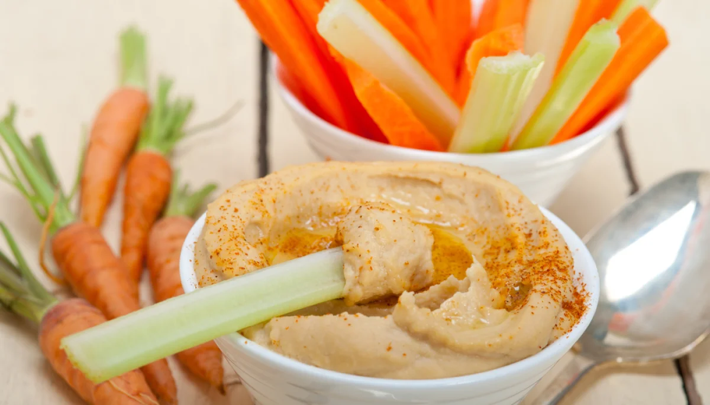

Hummus Casero con Bastones de Zanahoria

Este es el snack que comes cuando quieres picar algo salado y crujiente sin caer en papas fritas o galletas. En esta receta, hacemos un hummus casero ultra cremoso con garbanzos, tahini y limón, y lo acompañamos con bastones de zanahoria y pepino bien fríos que truenan al morderlos. Además, tiene fibra, proteína y grasa buena, por lo que te deja satisfecho 3 horas con muy pocas calorías.